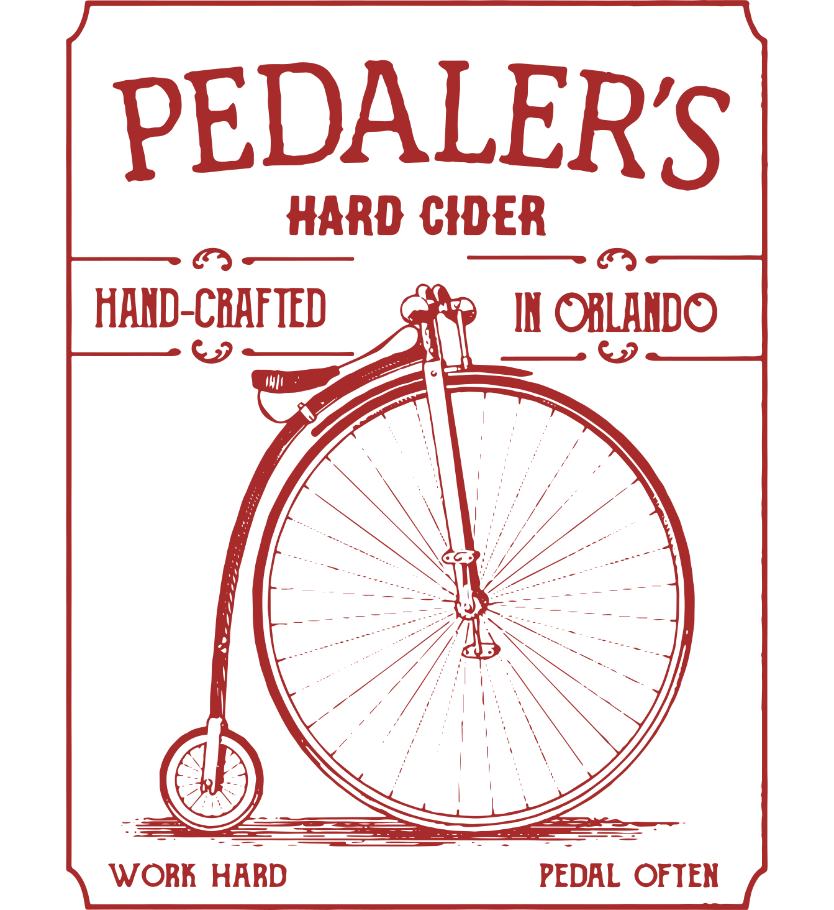
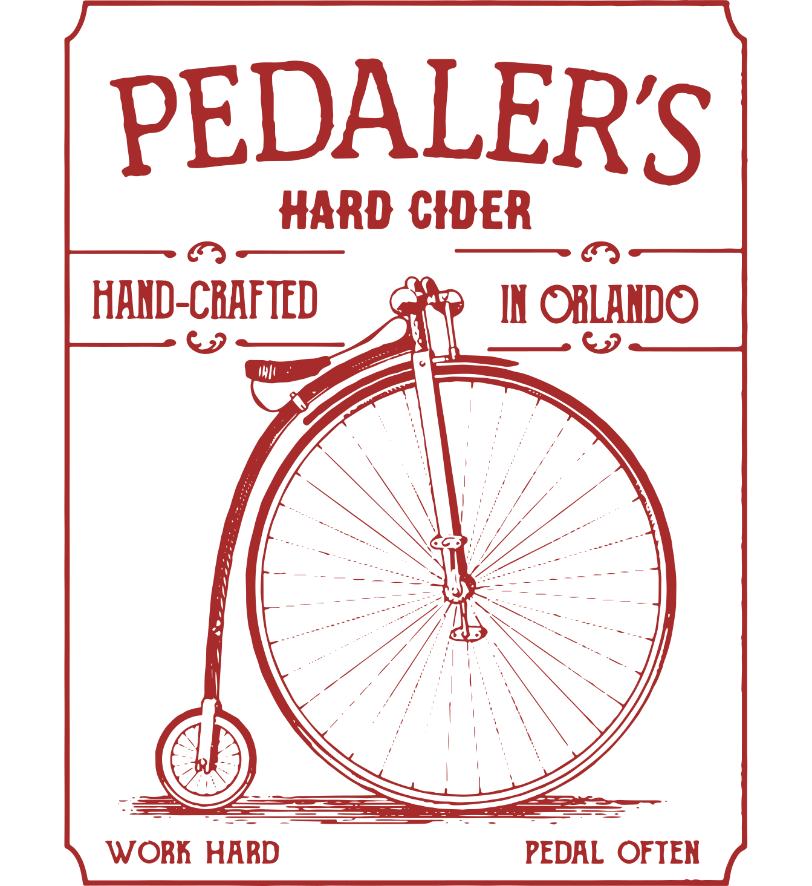

Pinellas County
Uptappd:
(3.52)
222 22nd St S, St. Petersburg, FL 33712
Manatee County
(3.73)
2505 Manatee Ave E, Bradenton, FL 34208
Palm Beach County
(3.61)
1027 N Florida Mango Rd #3, West Palm Beach, FL 33409
Osceola County
1623 10th St, St. Cloud, FL 34769
Broward County
(3.88)
1465 SW 6th Ct, Pompano Beach, FL 33069
Brevard County
(3.46)
200 Imperial Blvd, Cape Canaveral, FL 32920
Hillsborough County
(3.82)
1812 N 15th St, Tampa, FL 33605
Duval County
11830 Old Kings Rd, Jacksonville, FL 32219
1133 Baum Ave N, St. Petersburg, FL 33705
(3.76)
5202 Thonotosassa Rd, Plant City, FL 33565
(3.58)
115 NW 6th St, Fort Lauderdale, FL 33311
St. Lucie County
(3.75)
411 N 2nd St, Fort Pierce, FL 34950
Orange County
(3.71)
1312 Wilfred Dr, Orlando, FL 32803


 
